Йога способна сделать человека лучше и внешне, и внутренне. К Международному дню йоги мы подготовили несколько советов для новичков, а также простые асаны, которые подойдут как для индивидуальных, так и парных занятий.
Что такое йога
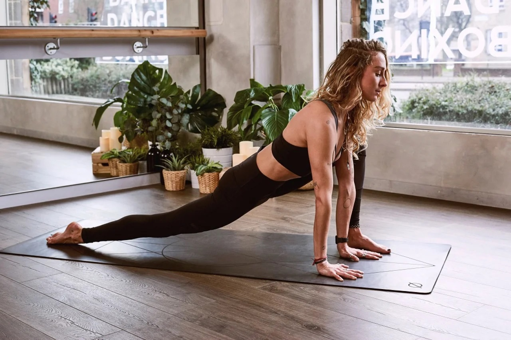Йога — это совокупность физических, психологических и духовных практик, нацеленных на очищение организма и достижения состояния духовного возвышения. Существует множество ее разновидностей — есть йога для беременных, флай йога (воздушная), хатха йога и другие. Хотя чаще всего начинают заниматься йогой просто для похудения.
В практике физической йоги (асаны) более 300 позиций. 10 простых поз — отличная программа на каждый день, которая поможет вам усовершенствовать искусство йоги.
Прежде чем приступить к изучению позиций, необходимо знать правила занятий, которые приведут к успеху. Мы приводим девять советов от эксперта по йоге Карен Косты, которые помогут новичкам быстрее перейти к более сложным практикам.
Йога для начинающих — советы и рекомендации
1. Обратите внимание на место для занятий
Отличная идея — обратиться в студию, где вы будете практиковаться, чтобы попросить рекомендации по подходящему для вас классу. Обязательно предупредите наставника о своих травмах и физических ограничениях, если они у вас есть. В идеале, начните с класса, специально предназначенного для начинающих, где вы изучите основы физических практик и основы дыхания.
2. Приезжайте на занятия заранее
Попробуйте приехать за 15 минут до начала занятий. Это даст вам время освоиться и привыкнуть к энергии пространства. Новые ученики часто признаются, что нервничают перед первым уроком, что совершенно нормально. Старайтесь не увеличивать стресс, опаздывая.
3. Представьтесь
Обязательно представьтесь и сообщите своему учителю, что вы новичок в йоге. Не стесняйтесь, так как в ваших интересах рассказать все о себе. Ваш учитель может, например, предложить полезные модификации для определенных позиций.
4. Выберите хорошее место в зале
Тяготение к заднему ряду класса кажется естественной склонностью для многих людей, особенно новичков. Занятия йогой не являются исключением, и многие новые студенты выбирают задний ряд. Эксперт советует поместить свой коврик для йоги так, чтобы вы могли лучше слышать и видеть учителя.
5. Установите цели
Большинство занятий йогой начинаются с искусства правильно дышать и сосредотачиваться, прежде чем перейти к изучению асан. Подумайте о вашей цели занятий йогой. Например, вы можете решить сосредоточиться на глубоком дыхании на протяжении всего занятия или на практике. Возможность использовать йогу для ухода за своим телом — еще один способ обосновать вашу практику.
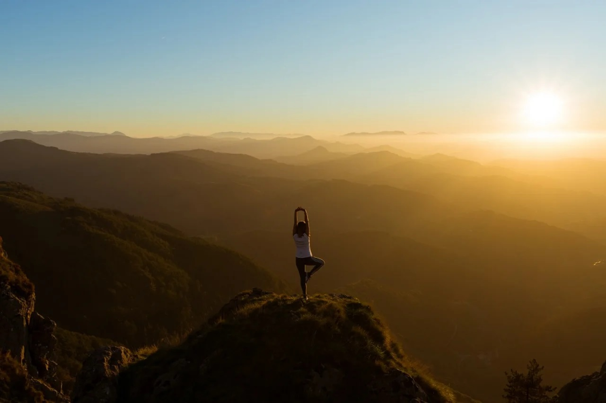6. Слушайте свое тело
Одна из самых популярных подсказок на занятиях йогой: «Прислушивайся к своему телу». По мере того, как вы будете совершенствоваться в своей практике, ваша связь с телом также будет улучшаться. А пока просто помните, что в йоге не должно быть больно. Используйте свое дыхание в качестве индикатора. Если оно становится прерывистым или неустойчивым, это может быть признаком того, что вы превысили свои пределы. Сделайте перерыв и несколько глубоких вдохов, прежде чем вернуться к своей практике.
7. Следите только за собой
Йога это не соревнование. Оценки не выставляются. Цель йоги — прогресс, а не совершенство. Следите за собой, чтобы сосредоточиться на прохождении занятия таким образом, чтобы оно служило вашему телу и вашим потребностям.
8. Стремитесь к покою
Для многих учеников, как в первый раз, так и в долгосрочной перспективе, шавасана (финальная позиция отдыха) может быть наиболее сложной позой в классе. Многие из нас привыкли быть в постоянном движении, и пребывание в покое с самими собой и своими мыслями без движения может стать новым опытом.
Многие новички признаются, что испытывают стресс в савасане, потому что они не могут остановить свои мысли. Однако вместо того, чтобы пытаться остановить их, просто отпустите их и концентрируйтесь на дыхании.
9. Не останавливайтесь
С каждым новым занятием их влияние на вашу жизнь будет увеличиваться. Если йога не откликается вам сразу, дайте ей немного времени. Попробуйте разные стили занятий и разных учителей, пока не найдете подходящую для себя практику. С усердием и постоянством вы узнаете все преимущества йоги.
Также советуем купить качественный коврик, который не будет скользить, надевать на занятия удобную одежду и не забывать водном балансе.
Йога — позы для начинающих
1. Собака мордой вниз / Адхо мукха шванасана
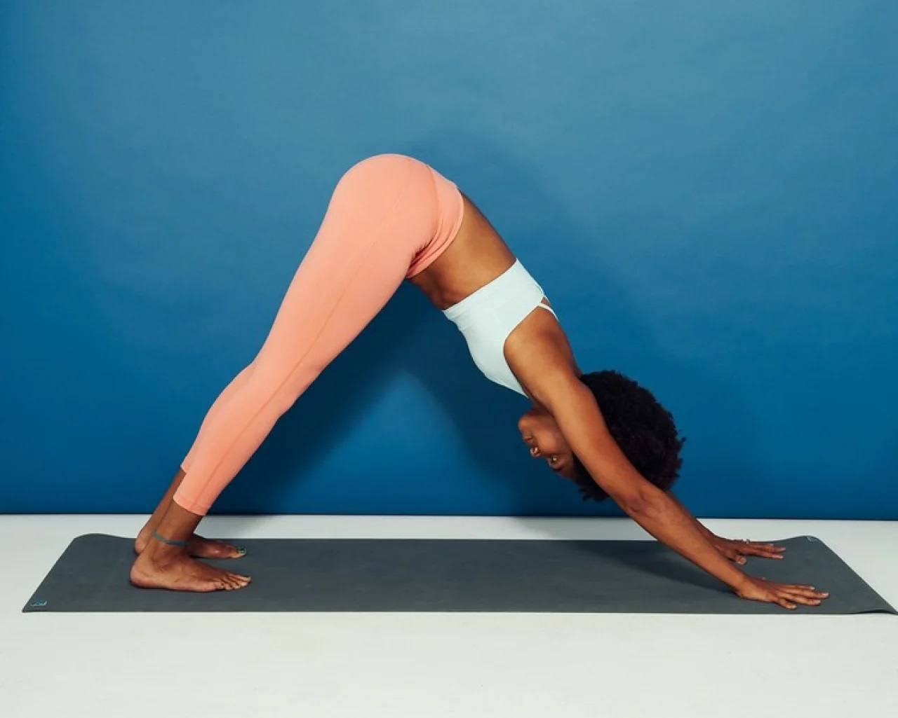Начните с асаны с упором на руки и колени — разведите руки в стороны и нажмите указательным и большим пальцем на коврик.
Поднимите копчик и начните подтягивать бедра к потолку. Выпрямите ноги как можно лучше и осторожно прижмите пятки к полу.
Ваша голова должна быть между руками, лицом к коленям, а спина должна быть ровной.
Задержитесь в позиции на 5−10 вдохов.
2. Поза горы / Тадасана
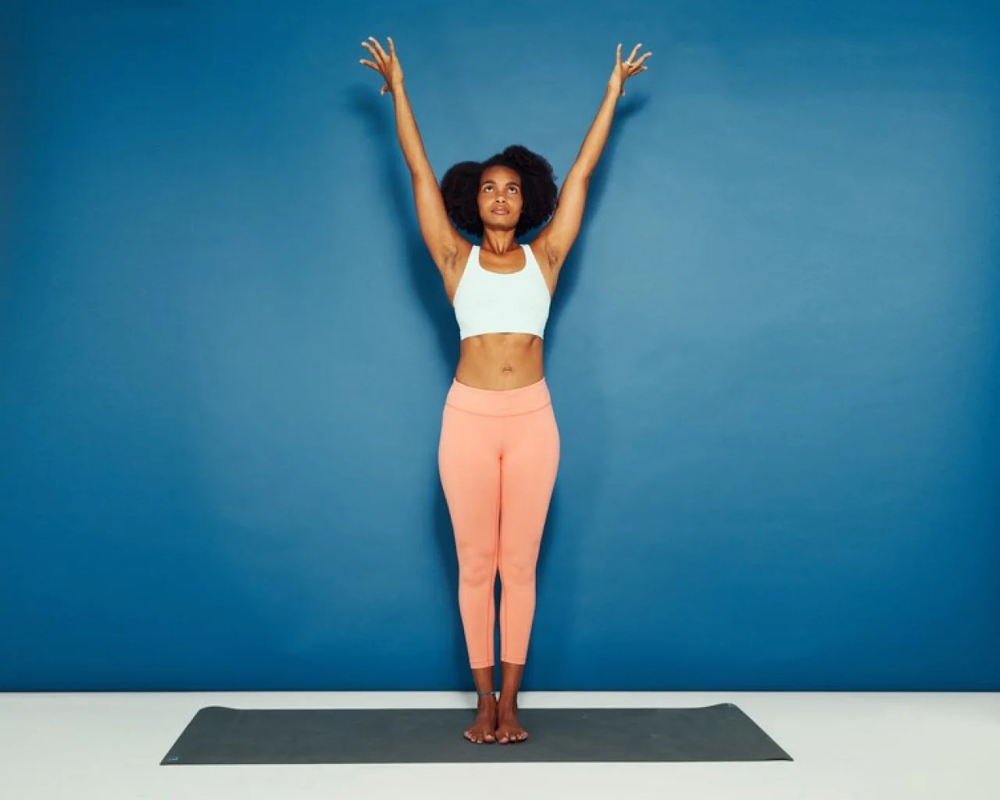Встаньте, слегка расставьте пятки.
Раздвиньте пальцы ног и равномерно распределите вес по обеим ногам. Расслабьте плечи. Вдохните и вытяните руки над головой, одновременно перемещая вес на ноги. Вы также можете сложить руки в «молитвенном положении» перед грудью или опустить их. Делайте долгие, медленные, глубокие вдохи. Задержитесь на 3−5 вдохов.
3. Воин II / Вирабхадрасана
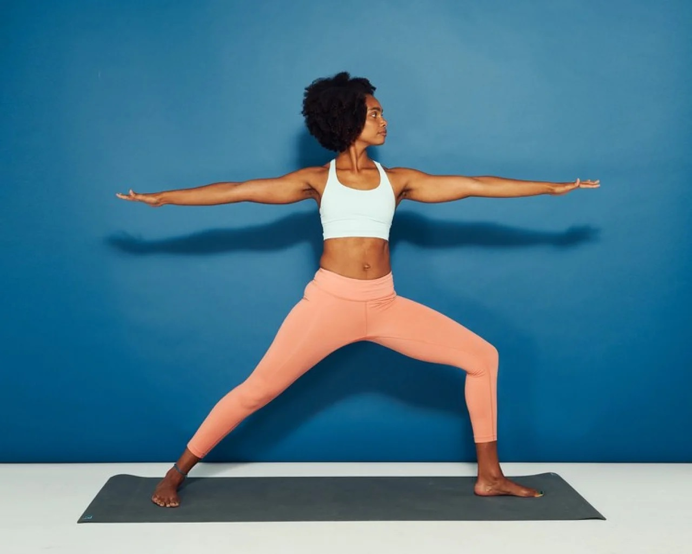Сделайте большой шаг вперед левой ногой, расставив ноги почти на всю ширину мата. Вытяните руки так, чтобы они были параллельны полу.
Согните левое колено, чтобы оно было под углом 90°, сохраняя правую ногу прямой.
Направьте левый носок вперед и поверните правую ногу вправо так, чтобы она была перпендикулярна левой ноге. В то же время поверните туловище вправо так, чтобы левое бедро было обращено к передней части комнаты, а правое бедро — назад. Левая рука и голова должны быть направлены вперед, а правая — назад.
Задержитесь на 1−5 вдохов.
4. Треугольник / Триконасана
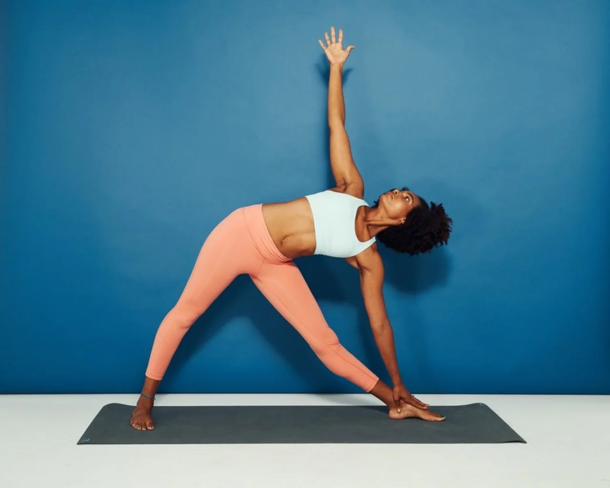Начните с позиции Воин II.
Выпрямите согнутую ногу. Затем вытяните вперед левую руку. Наклоните туловище вперед и разверните его вправо.
Поверните руки так, как показано на иллюстрации. Опустите левую руку на голень или пол, если можете, и вытяните пальцы верхней руки к потолку.
Задержитесь на 5−10 вдохов.
5. Планка / Кумбхакасана
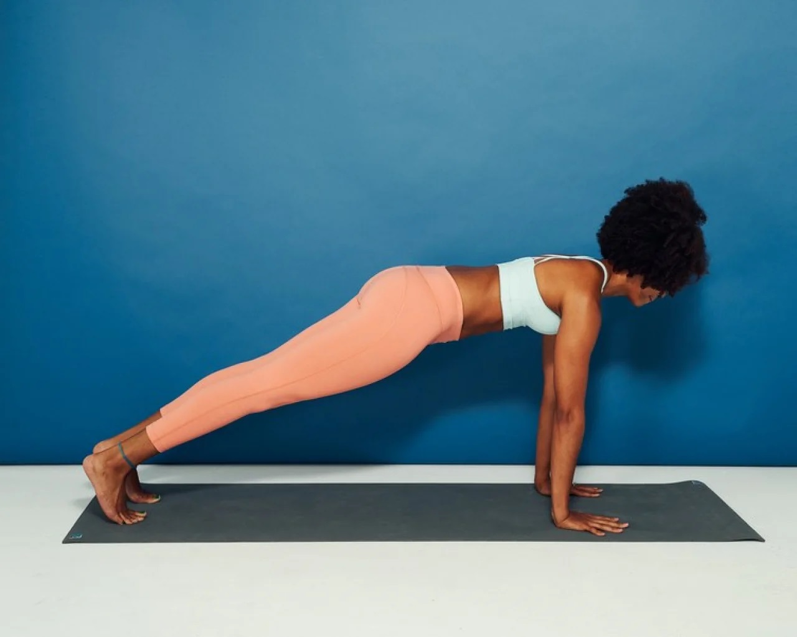Встаньте на четвереньки. Поднимите колени от пола и вытяните ноги позади себя. Теперь вы должны быть на пальцах рук и ног, а ваше тело образует одну длинную линию.
Держите ладони на полу, руки на ширине плеч. Держите шею и позвоночник в нейтральном положении, опустите взгляд на коврик.
Задержитесь в этом положении на 3−5 вдохов.
6. Низкая планка / Чатуранга дандасана
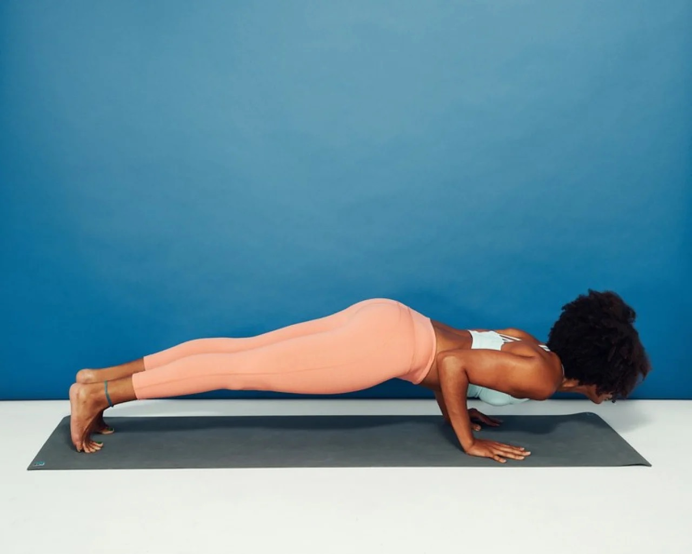Начните с позиции планки, положив ладони на пол, расставив руки на ширине плеч. Медленно опускайтесь на низкую планку, сгибая свои локти, прижимая их близко к краю тела, пока они не образуют углы в 90 градусов.
Задержитесь на 1 вдох.
Как правило, за этой асаной следует поза Собака, смотрящая вверх.
7. Собака мордой вверх / Урдхва мукха шванасана
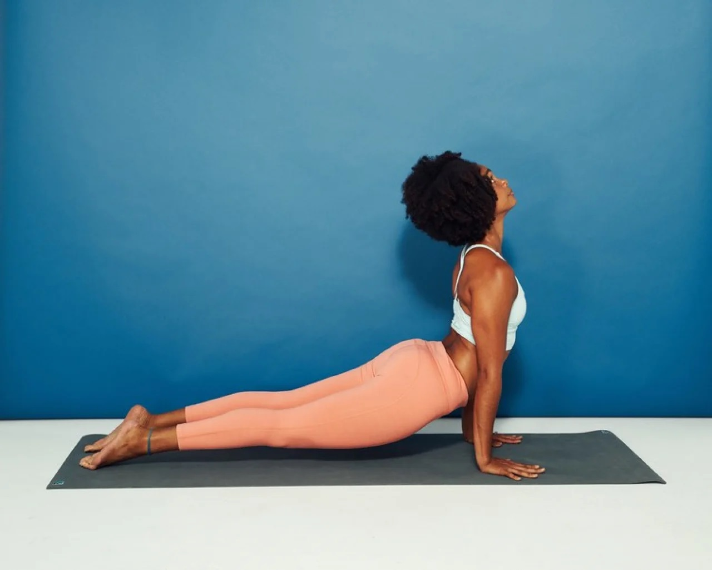От позиции Низкая Планка опустите бедра на пол и разверните пальцы ног так, чтобы верхние части ваших ног касались пола.
Выпрямите руки, чтобы поднять грудь вверх. Отведите плечи назад, сожмите лопатки и отклоните голову к потолку.
Йога для двоих
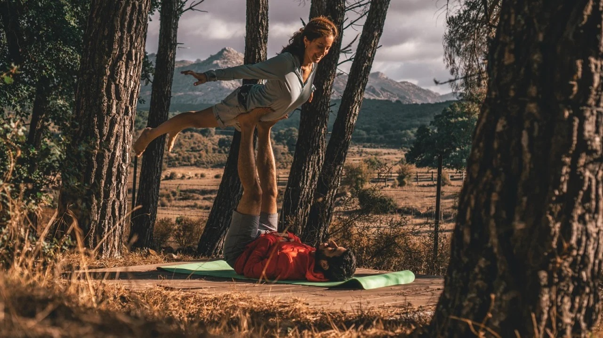Если вы начали заниматься практиками вместе со своим партнером, то сможете со временем перейти к парным асанам. Вот лучшие из них:
- Сядьте, скрестив ноги, лицом к партнеру, положив руки на колени друг друга. Если сидеть со скрещенными ногами неудобно, сядьте на сложенное полотенце или подушку для большей поддержки. Смотрите в глаза своего партнера. Сделайте 10 глубоких вдохов и выдохов. Важно установить глубокую связь без слов.
- Оставайтесь на месте и держитесь за предплечья друг друга. Держите крепко. На вдохе поднимите грудь, чтобы в верхней части спины образовалась небольшая дуга. На выдохе втяните подбородок, закруглите верхнюю часть спины и широко расставьте лопатки. Продолжайте одно и то же движение в течение нескольких циклов дыхания, можно поднимать взгляд при вдохе и опускать при выдохе. Повторять от 10 до 12 раз.
- Отличная асана для начинающих йогов, потому что вы можете использовать друг друга для поддержки: встаньте спиной к спине, расслабив руки по бокам. Плотно прижмите спины, разводя ноги на ширине бедер, а затем слегка отодвигая их от партнеров. Медленно согните колени и опустите, как будто вы сидите на стуле.
Музыка для йоги
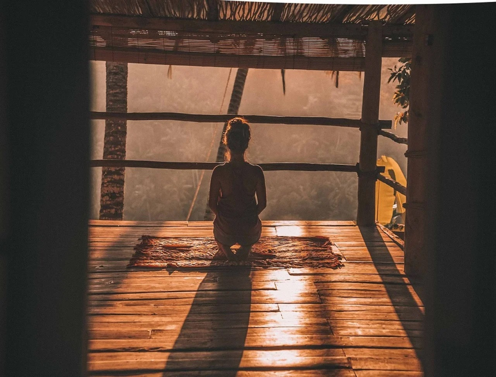Издание Yoga Journal предлагает плейлист, который поможет воссоединиться со своим телом, путешествовать внутрь себя и почувствовать любовь к себе.
- Like Silk — Sleepdealer, Gudo Rewinds
- Lifting You — Michael Blume
- Love Me Now — Ziggy Alberts
- Watch — Billie Eilish
- Fallss — Bayonne
- Sirens — ford.
- You Can’t Rush Your Healing — Trevor Hall
- The Wind — Yusuf / Cat Stevens
- Held — Trevor Oswalt, East Forest